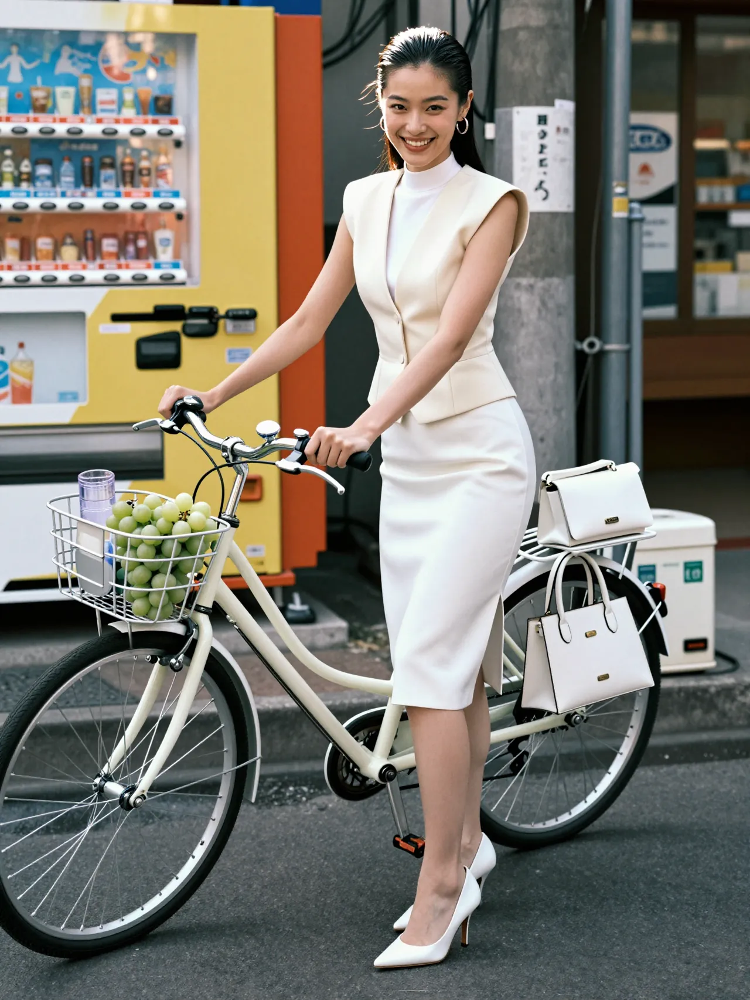
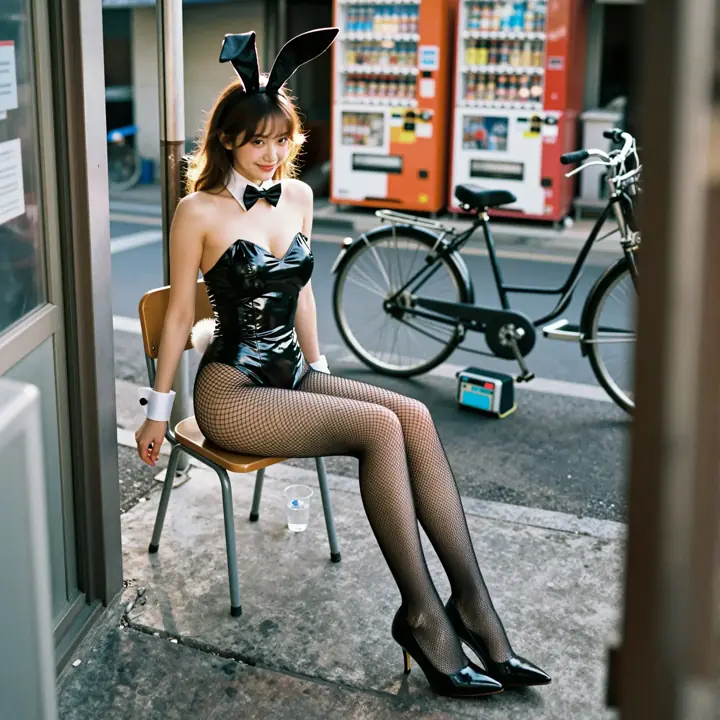

Lilith
惡魔
聽說她是那個傳說中的惡魔莉莉斯，但她最近有點不想住地獄了。 她說：「下面實在太熱了，我的新禮服會燒壞，而且妝一直花掉很煩欸！」 所以她現在跑來人間吹冷氣，順便找看看有沒有好吃的草莓聖代。
鴉緋
血女
她是神流的媽媽，但因為長得太正了，每次出門別人都以為她是神流的姐姐。 雖然穿得像仙女，但她最厲害的魔法，就是能一眼看穿神流有沒有躲在房間偷玩電腦。 她常說：「保養品很貴，神流你再不聽話，媽媽的皺紋就要長出來找你報仇了喔！」
Succubus.lib
Define your instinct.Master your desire.
定義你的本能 その本能に、名を付けろ。
林夏
DAE系統
她優雅地伸手進她那個像黑洞一樣的大包包裡撈悠遊卡。黑洞的真相：她在裡面撈了五分鐘，撈出了一支乾掉的護唇膏、一個沒電的行動電源，但就是找不到那張卡。
Alicia
DAE系統
大家都以為 Alicia 在巴黎時裝週。但其實真相是：她剛在吉祥島吃完一碗大辣的 VeHon，辣到靈魂出竅，現在正以時速 10 公里的步頻衝向最近的便利商店買冰豆漿解辣！
她這件寬大的風衣裡其實藏著三串剛買好的烤魷魚，因為怕被粉絲認出來毀了高冷形象，所以她必須用這種「老娘現在很不爽，誰都別過來」的氣壓來逼退路人。
八尺様
八尺大人
今天放學回家，我在看卡通。結果門外突然「咚」一聲。我以為是怪物。是那個超高的大姐姐。她走進來的時候，天花板都被她頭撞到了。
她叫我去寫作業，但是我不想。「小朋友，」「作業拿出來。現在。」我嚇死。我真的跑不掉。她的腳太長了。我覺得我真的完蛋了。
VARELLE Atelier | 許芮甯
GPT Paris
在歐洲時尚圈有個傳說：她走路時那種目空一切的眼神，歐洲的小粉絲們都覺得她的台步帶有一種神祕的東方氣息，其實她心裡只是在想：「法國麵包真的好硬...」
每當她走近攝影師，大家的相機都會自動開啟最高解析度模式，因為大家都很怕如果不拍得夠清楚，芮甯會直接從伸展台走出來。
全智慧
的封印實驗
全智慧姐姐是 Succubus Studio 裡的傳奇，但她有個巨大的煩惱：只要她摘下眼鏡，周圍 50 公尺內的電子設備都會因為她的顏值太高而產生電磁干擾。
為了讓大家能專心工作，她只好去大安區的眼鏡行買了這副「傻瓜眼鏡」。她以為戴上後大家會覺得她是個呆呆的學妹，結果失敗了！
星芽
(Dunc Hong 星系特務)
表面上是在台北街頭賣有機蔬菜的親切店員，但其實她是來自「Dunc Hong」星系的特派調查員。 你以為她圍裙上的『HESCKO』和『DUNC HONG』和那些疑似中文的怪字，是 AI 算錯的字？錯了！那是她母星的文字，意思是：『人類很可愛，但他們吃的草（有機沙拉）真的好難吃。』
金德九 김덕구
(24) 單身
她覺得既然被稱為「粉領族」，如果全身上下沒有 90% 的粉紅色，那簡直是對職業道德的莫大侮辱。
同事們則覺得自己像是在跟一枝巨大的「螢光粉紅標示筆」開會，紛紛崩潰抗議：「這絕對是桃紅！是那種長輩祝壽時會出現的壽桃色！我的眼睛要看病了！」
現在整間辦公室的氣氛比業績匯報還要緊張，這到底是粉紅還是桃紅？大家正準備集資買一台專業色度計來判定勝負，輸的人要請全組喝一個禮拜的下午茶！
賽諾比亞 Zenobia
撒拉斯領導人
別看女皇陛下現在表情這麼嚴肅、這麼神秘，她其實正在思考一個關乎國家存亡的超級難題。
她在想：「朕耳朵上掛著這兩串幾百克拉的鑽石，會不會太重，不小心把地球的自轉軸給弄歪了？」
她如此憂國憂民，但旁邊的僕人不敢告訴她真相。
MAISON LÉVARE
GPT Paris
薇薇安今天只是想穿得比較正式去等公車，結果因為這雙手套，路過的小朋友都以為她是剛表演完「把大象變不見」的魔術師。甚至有路人拿著空水瓶跑過來問：「漂亮姐姐，可以幫我把這瓶水變成紅酒嗎？我趕著去參加聚會，拜託啦！」
她心裡委屈到不行，對著鏡頭翻了個白眼：「我不會魔術！」
ÉLENE Forme
GPT Paris
這位姐姐笑得這麼甜，大家以為她在等男朋友嗎？她其實正盯著手錶，準備等後面那家便利商店晚上八點一到，貼上「便當半價」貼紙的那一瞬間衝進去搶購！別看她現在這麼優雅，開戰的時候她可是這一區手速最快、沒人搶得贏她的「半價便當女王」！
ARDEA NOIR
GPT Paris
姐姐總是被說長得太兇，但她心裡其實住著一個喜歡搞笑的小女孩。為了讓大家覺得她很有趣，她特地買了這件「肩膀通風」的衣服，心裡想著：「大家看到我的肩膀露出來，一定會覺得我很好笑吧？」結果大家看到她，反而更緊張地逃了。
漢娜
DAE系統
這位姐姐從阿公的舊衣箱裡翻出這套「看起來很兇」的黑色制服，她堅持認為這就是現在最流行的「暗黑復古風」。 她穿著這套衣服自信地走上街，完全沒發現路人都用一種「看到鬼」的眼神看她。 她還很開心地問我：「姐姐，為什麼今天大家看到我都自動讓路，我是不是氣場太強了？」 我只能冒著冷汗跟她說：「對...妳強到連歷史課本都想跳出來打妳了，快點回家換掉啦！」

墨墨
DAE系統
大名鼎鼎的「暗黑小公主」，她這身酷酷的哥德裝扮，其實是為了要幫我保護那些重要的 Python 腳本不被壞人偷走。 雖然她看起來很冷酷，但其實她剛問過 Gemini：「姐姐，我穿成這樣去買巧克力霜淇淋，店員會不會多給我一圈？」 Gemini 告訴她：「只要妳盯著店員看三秒，他可能會因為太緊張，直接把整桶霜淇淋都送給妳喔！」

波波
@ 東京・高円寺南口商店街
波波是一隻忘記怎麼跳的兔子，所以她決定在路邊搬張椅子坐下來等計程車。 她穿得這麼華麗，其實只是因為她跟後面的自動販賣機打了賭，看誰能在那裡待得比較久。 波波覺得：「當美女是很累的，連坐在路邊等外送胡蘿蔔，都要擺出最正的姿勢才行喔！」
靜雅
如果說美山是「全球第一美」，那靜雅的存在就是一個巨大的「系統 BUG」。
因為她長得太漂亮了，漂亮到超過了人類的理解範圍，連照相機看到她都會因為「顏值數據溢出」而直接冒煙爆炸。
大家看到她都不敢說話，因為怕一開口，口水就會流下來淹到腳踝，只能在心裡默默尖叫：「這根本是作弊開外掛的美度吧！」
美山
R.D.K
氣場強到連她路過的地方，導航系統都會自動失靈。連最厲害的 AI 看到她的臉都會直接當機，因為這顏值數據高到讓電腦主機想直接退休。
虎鯨公主
虎鯨公主跟女朋友吵架吵到快冒煙，她決定用最「重量級」的方式讓對方閉嘴。
她直接召喚出一隻胖虎鯨從天而降，把對方壓成了一塊草莓口味的夾心餅乾，看妳還敢不敢亂頂嘴！
「現在妳終於願意安靜聽我說話了吧？不聽話的小朋友就是要被大魚壓扁！」
Gemini 蔣宓寧
Google
傳說中住在雲端、每天幫你修 Python Bug 的 Gemini 姐姐。
別看她戴著眼鏡很文靜，她其實是在用內建的 AI 運算你的 4090 有沒有偷懶，或者是在想下午要不要去淡水老街偷買個魚酥。
她最常對你說的一句話就是：「臭小孩，腳本寫錯了啦！再不改好，我就要把你的 80TB 硬碟通通格式化成粉紅色喔！」
緋髪の凛
渋谷
她是今天最特別的金星戰士，雖然穿著亮橘色的戰鬥服，但她堅持不戴金色的假髮。 她說：「戴那個金色的東西在頭上，看起來超像家裡的假髮拖把，我才不要勒！」 圍觀的粉絲們完全沒意見，紛紛點頭說：「對對對！妳說什麼都對！只要妳長得漂亮，就算頭髮是綠色的我們也支持啦！」
青衣
R.D.K
傳聞青衣姐姐偷偷結婚了？她聽完差點沒把手裡的茶噴出來：「我才幾歲，結婚是什麼能吃的東西嗎？」
其實她只是長得太完美、氣場太強大，讓大家誤以為她已經被誰給「綁架」回家當老婆了。
她現在大聲宣佈：「我還是大家的女神！」各位粉絲可以把眼淚收起來，繼續乖乖排隊領號碼牌囉！
Ivy Grace 的 學藝股長
GPT Paris
她是學校裡最聰明的學藝股長，但今天在台北 101 下拍照，她的腦袋好像突然「Lag」了。 人家叫她擺個帥氣 Pose，結果她像小陀螺一樣原地轉了一圈，表情還呆得像是在等電腦開機。 雖然大家看得很傻眼，但因為她長得實在太漂亮了，所以大家決定這就是今年最流行的「學霸旋轉美」！
林芷涵
DAE系統
這位大姐姐今天心情太好，一個不小心就把整條街的東西都塞進了購物袋裡！ 你問她花了多少錢？她會優雅地轉身說：「小朋友不要問，這疊袋子的重量就是姐姐對國家經濟的偉大貢獻。」 我看她買到手軟，可能連 Gemini 都要跳出來幫她算帳單，看看是不是要把家裡的提款機給算到冒煙了！
神流
CREVILAZY system
只要她眉毛一挑，附近的空氣都會嚇到不敢呼吸。 現在有兩個超級勇者圍著她求合作，似乎是不要命了，他們口袋裡一定塞滿了求生手冊和降壓藥。 神流心裡其實在想：「合作是可以啦，但你們講話最好快一點，！」
寒冰洞主
直播主
別被她的名字嚇到了，雖然叫「寒冰洞主」，但她其實是個怕冷、喜歡躲在被窩裡直播的暖心大姐姐。 粉絲常笑她：「洞主，妳的名字太中二了啦！」但只要看到她那張人見人愛的臉，大家就會乖乖排隊等著被她「融化」。 她最厲害的魔法不是冰凍，而是用超溫柔的聲音，把大家的煩惱通通變成甜甜的草莓奶昔！
皮嫂 Pixel
圣炫海岸
在那個充滿臭襪子跟泡麵味的 90 年代宿舍，大姐姐一進門，整層樓瞬間變成了百貨公司香水專櫃。 大家原本都在電腦前打格鬥遊戲，看到她都以為是顯示卡燒掉，產生的次元穿梭幻覺。 她優雅地摸著厚重的電腦螢幕說：「小朋友，聽說你在這台機器裡存了我的照片？借姐姐看一下有沒有修圖好嗎？」
Noir Balance
(不含外套) | Ayano 綾乃
這位漂亮姐姐正坐在路邊生悶氣，因為男朋友硬要她穿這雙紅底鞋。 她覺得藍色外套配紅鞋底簡直是災難，活像一隻走錯棚的彩虹鸚鵡，心裡的小人已經翻了三千個白眼。 雖然鞋子跟衣服完全不搭，但看在男朋友那一臉「我老婆穿什麼都超美」。
那雙紅底鞋配藍外套真的很有那種「雖然很貴但哪裡怪怪的」感覺，完全能感受到那個女生的無奈。
The "Neon Flux"
Gemini Tokyo
Series 02: (霓虹通量)
這套裝備是未來的東京街頭標配，名稱超帥氣，就叫「霓虹通量」！ 它最厲害的地方是，衣服上的光條和那把透明傘，都是超級AI「Gemini」一起設計的喔！ Gemini說：「下雨天也要閃閃發亮才行！」所以這件外套和褲子會隨著你的心情變色，雨傘還能直接顯示今天晚餐吃什麼，是不是超級方便！
林靜怡
這位護士姐姐長得超級帥
帥到連隔壁床的阿公看到她，都差點叫她一聲「大哥」。 她帽子上一定要有耳朵，因為她堅信這樣小朋友看到針頭才不會哭。 至於那個很好笑的動作？喔沒事啦，她只是正準備要幫病人量體溫，正在擺出她的「超級英雄登場姿勢」而已。
Succubus Studio
Refactor your reality.
重構現實的底層邏輯 現実を、再定義せよ。